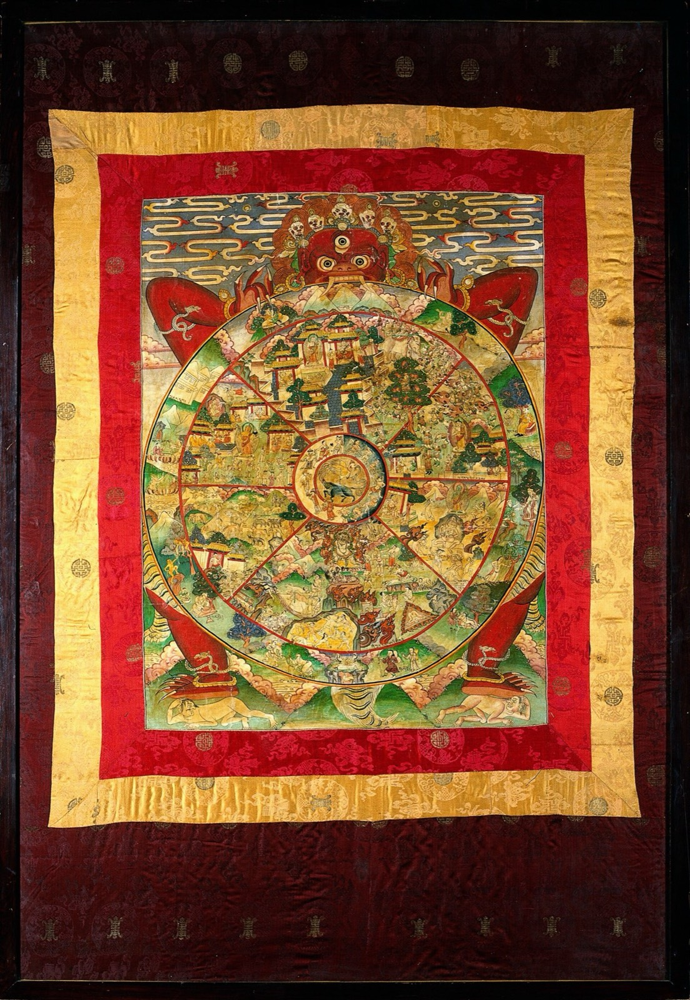

bhavachakra · the wheel of becoming
the six realms
"In the inner sense, all these realms are found within our own minds. Although we have the form and psychology of human beings, we are continually going through states of mind that correspond to the other realms." — Francesca Fremantle, Luminous Emptiness

At the hub, three animals chase each other's tails: a rooster, a snake, a pig — greed, hatred, delusion. Around them turn six realms, into which beings are born and reborn. The tradition also reads the wheel inwardly: six weathers the mind moves through, each with its own logic, its own trap, and its own door.
The realms are predominantly emotional attitudes toward ourselves and our surroundings, emotional attitudes colored and reinforced by conceptual explanations and rationalizations. As human beings we may, during the course of a day, experience the emotions of all the realms, from the pride of the god realm to the hatred and paranoia of the hell realm.
— Chögyam Trungpa, The Myth of Freedom
One way to describe them is that each of the realms is the world projected by a reactive emotion.
— Ken McLeod, Awakening from Belief
When a fly is trapped in a closed jar, no matter where it flies it cannot get out. Likewise, whether we are born in the higher or lower realms, we are never outside samsara.
— Patrul Rinpoche, The Words of My Perfect Teacher
greed, hatred,
delusion
the song
the cartographer
Romeo Stevens maps the realms as live psychological territory. From the community archive:
identifying with what I dislike → hell realm identifying with what I don't have → ghost realm identifying with what I do have → animal realm identifying with who I am better/worse than → titan realm identifying with my knowledge → human realm identifying with what I like → god realm
In the ____ realm, this ____ is mine, I am this ____. hell → suffering ghost → desire animal → safety titan → victory human → understanding god → pleasure
We all learn to turn away from suffering in one of six ways (the six realms). The Buddha refused all of them as inadequate strategies and persisted in seeing his suffering clearly until he was free.
The currencies of each realm are one way to sell things. Oppression sells Not enoughness sells Comfort sells Achievement sells Fake understanding sells Being better than others sells This is a useful lens for noticing where I get got.
Each realm deifies those who sacrifice for the realm. It's easy to make fun of the realms you aren't in.
the books
- Opening the Heart of Compassion — Martin Lowenthal & Lar Short — the core text behind this site
- Cutting Through Spiritual Materialism — Chögyam Trungpa — the "Six Realms" chapter
- Transcending Madness — Chögyam Trungpa — a seminar cycle on the realms and the bardos between them
- The Words of My Perfect Teacher — Patrul Rinpoche — the classical descriptions, unsoftened
- In the Realm of Hungry Ghosts — Gabor Maté
- The Tibetan Book of the Dead — trans. Francesca Fremantle & Chögyam Trungpa
- Wake Up to Your Life — Ken McLeod — much of it free at unfetteredmind.org
- Luminous Emptiness — Francesca Fremantle
the fire, and the vow
The All is aflame. Aflame with what? Aflame with the fire of passion, the fire of aversion, the fire of delusion.
— the Buddha, the Fire Sermon (trans. Thanissaro Bhikkhu)
May I be a guard for those who are protectorless, A guide for those who journey on the road. For those who wish to cross the water, May I be a boat, a raft, a bridge.
— Shantideva, The Way of the Bodhisattva, 3.18
Not until the hells are emptied will I become a Buddha; not until all beings are saved will I certify to Bodhi.
— the vow of Kṣitigarbha, the bodhisattva who walks into hell on purpose
The opposite of samsara is when the walls fall down, the cocoon completely disappears, and we are totally open to whatever may happen, with no withdrawing, no centralizing into ourselves.
— Pema Chödrön, The Wisdom of No Escape
built with love · source · may all beings be free